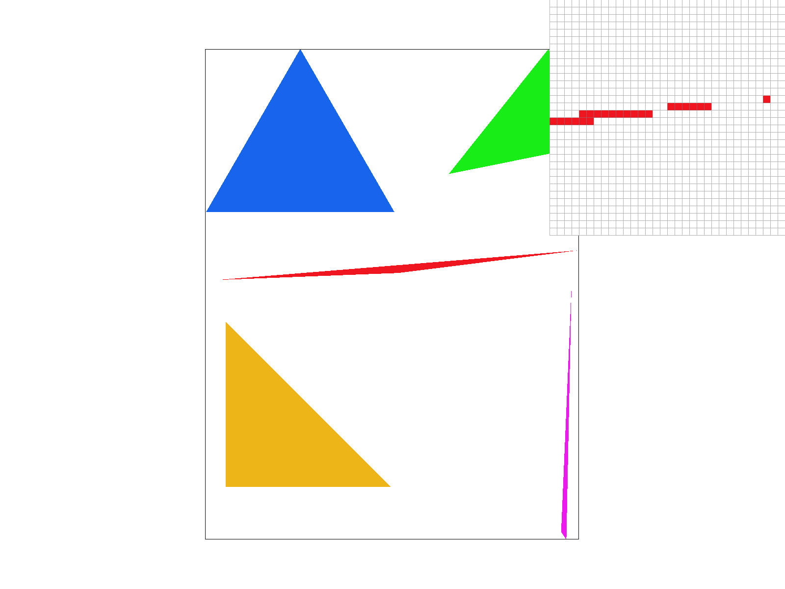
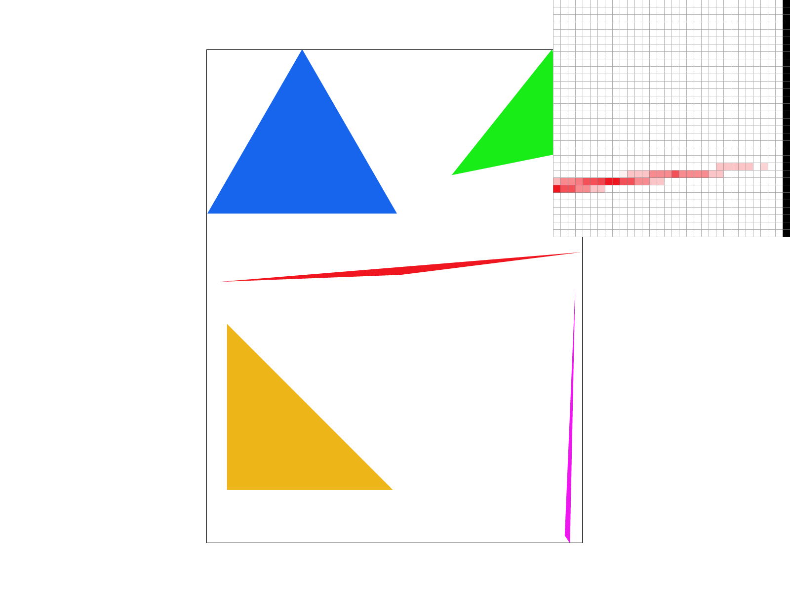
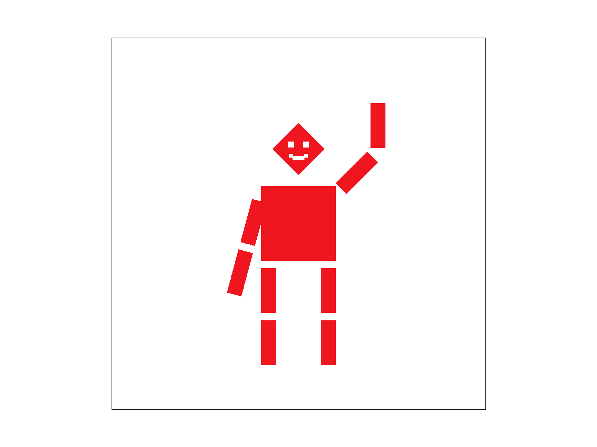
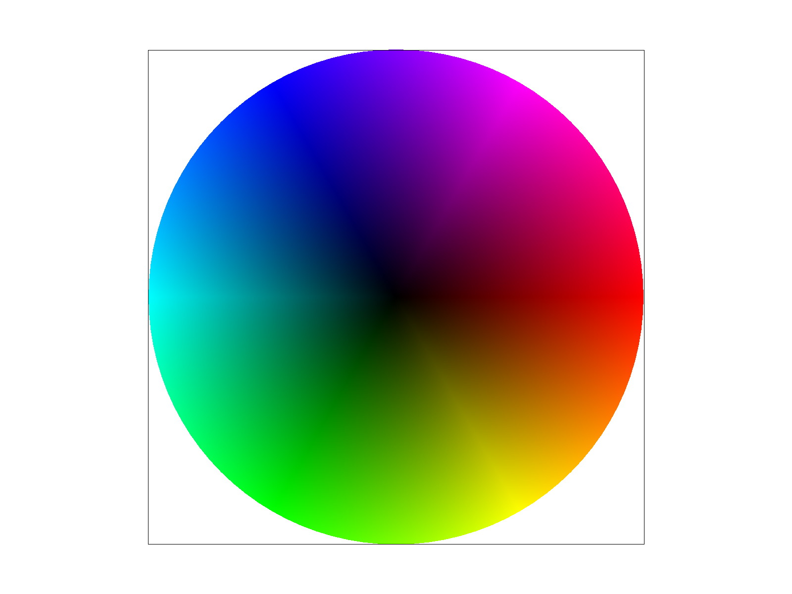
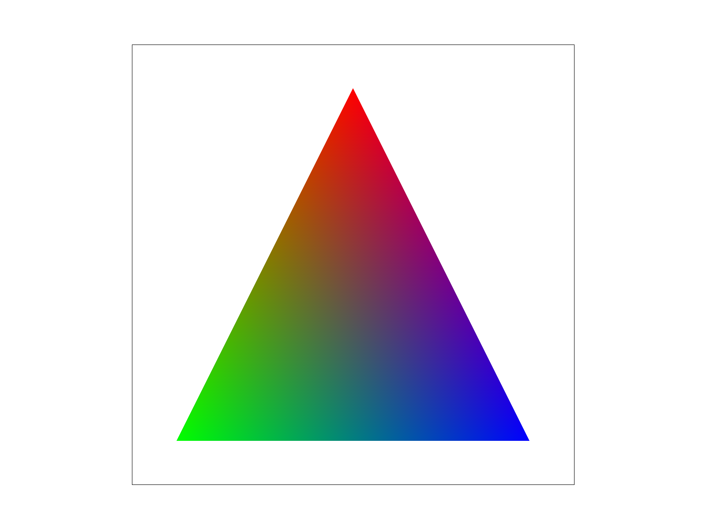
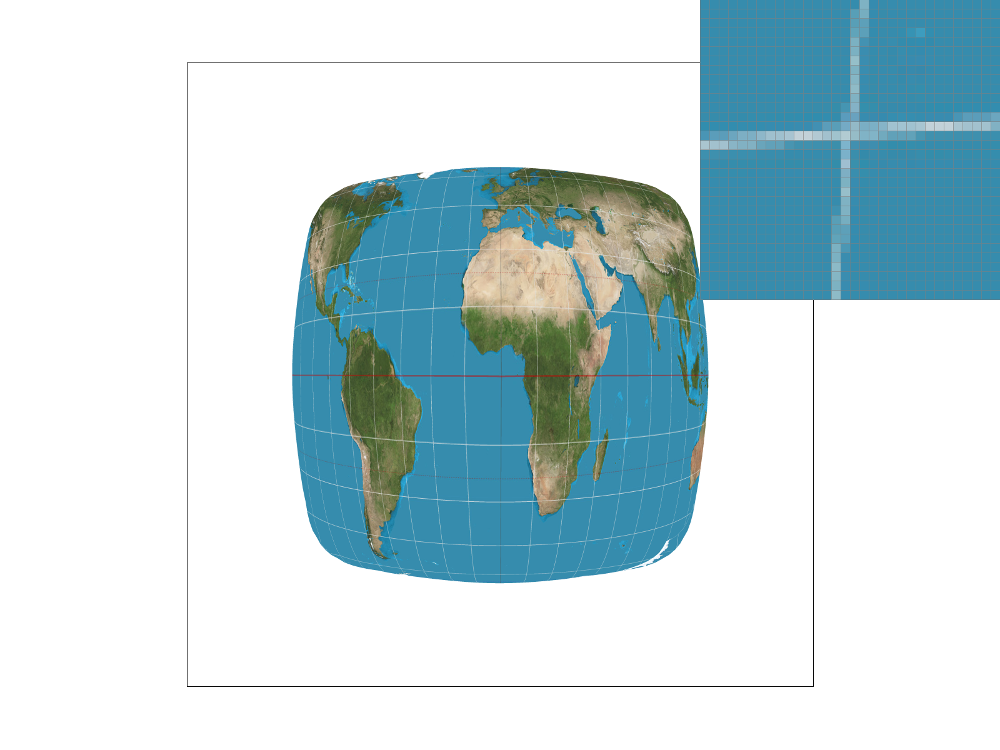
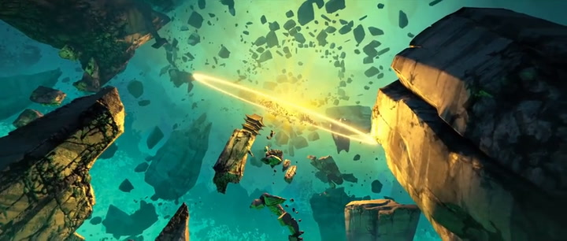
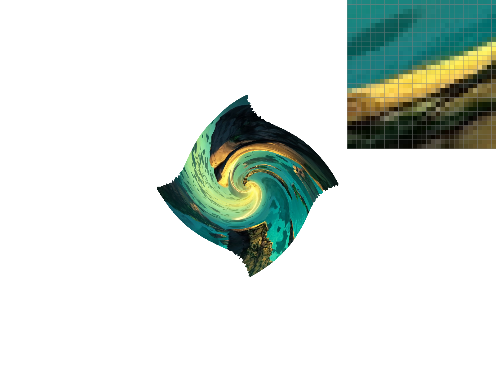
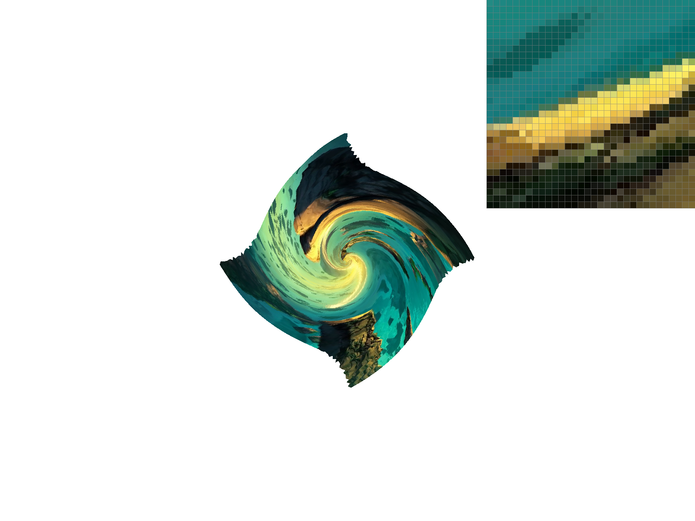
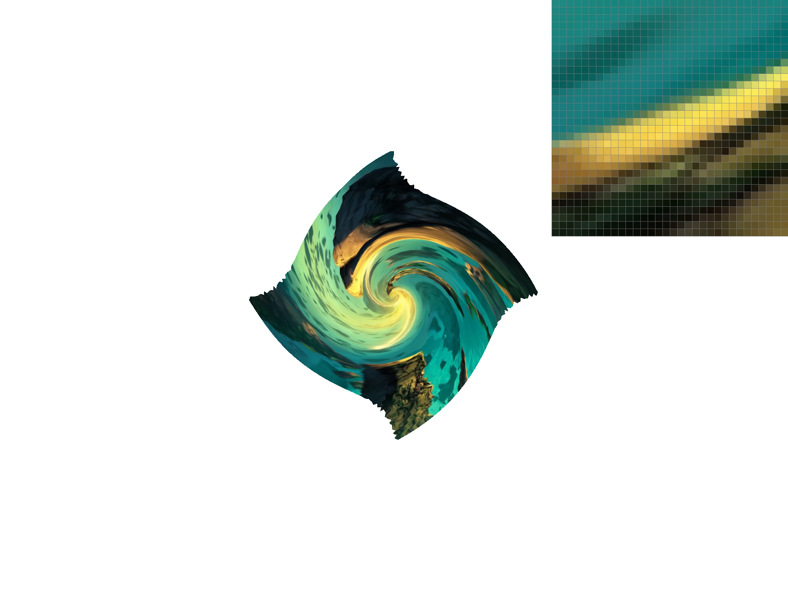

CS184/284A Homework 1 Write-Up
Rasterizer
Link to GitHub repository: github.com/cal-cs184-student/hw1-jaansi
Overview
In this project we built a rasterizer that turns the triangles described in svg code into real images! Starting with just simple colored triangles, we eventually built up to texture mapping through exploring antialiasing, supersampling, transforms, and barycentric coordinates!
Neither of us had thought too much about how graphics are actually generated before, so seeing it reduce to logic we could recreate ourselves was super cool. For example, to know that we can reduce all the images on our computer to triangles, linear algebra, and other simple math that we have learned in school already was really interesting.
Extra credit: we added a scanline optimization for rasterizing (with timing benchmarks), viewport
rotation on the Q and E keys, and anisotropic filtering as an extra mipmap level mode.
Task 1: Drawing Single-Color Triangles
Rasterizing a triangle, in essence, is figuring out which pixels the triangle covers and filling those pixels in.
The simplest way to do this would be to walk over every pixel in the whole image and check whether it falls inside the triangle. That wastes a lot of time on pixels nowhere near the triangle, though, so we did it a smarter way.
First we computed the triangle's signed area, \[ \text{area} = (x_1-x_0)(y_2-y_0) - (y_1-y_0)(x_2-x_0). \] If it was zero the triangle was degenerate, so we skipped it. If it was negative that meant vertices were wound clockwise, so we swapped two of them to make the winding counter-clockwise. That way we could consistently define "inside the triangle" as the same thing (standardized orientation/all three edge functions coming out \(\ge 0\)) no matter how the triangle was given to us.
What is an edge function? For the edge \(i\) going from vertex \(i\) to vertex \(j=(i{+}1)\bmod 3\), we precomputed coefficients so that \[ E_i(p_x,p_y) = A_i\,p_x + B_i\,p_y + C_i,\qquad A_i = y_i - y_j,\; B_i = x_j - x_i,\; C_i = x_i y_j - x_j y_i. \] Each \(E_i\) is zero right on its edge and positive on the inside of that edge, so a point is inside the triangle exactly when \(E_0, E_1, E_2\) are all \(\ge 0\). We tested the center of each pixel, \((x+0.5,y+0.5)\), and filled the triangle if it passed.
Instead of testing every pixel in the bounding box (the naive way), we filled them row by row. We realized on any single horizontal row, the pixels a triangle covers always form one unbroken strip. So instead of checking each pixel, we just figured out where that run starts and ends on the row and filled everything between them at once.
To find those endpoints, we used the same edge functions: on a fixed row, each edge inequality \(A_i p_x + B_i p_y + C_i \ge 0\) was just a simple range on \(x\), and intersecting the three ranges gave the ends.
Why this is always an optimization
We started the span as the full bounding-box row and the edge bounds can only ever shrink it inward, never push it back out past the box. So:
- We never touched a pixel that the bounding-box method wouldn't have touched.
- In the worst case (a row that the triangle covers edge to edge) the span is the whole bounding-box row, so we did exactly as much work as the naive version.
- Working out the span was just three small calculations per row, so there's no real overhead.
So we will always be, at worst, the same time as the full bounding box version!! Most of the times we will be faster, especially on thin horizontal triangles.

basic/test4.svg at the default viewing parameters, with the pixel inspector on a
triangle edge so you can see the jagged single-sample coverage boundary.Extra Credit: scanline optimization & timing
The scanline span above was our optimization beyond plain bounding-box rasterization. The starter code keeps
the simple bounding-box loop around (commented out in rasterize_triangle), so we could switch
between the two and time svg.draw() with clock() in DrawRend::redraw().
| Scene | Bounding-box scan (ms) | Scanline span (ms) | Speedup |
|---|---|---|---|
| basic/test3.svg | 15.87 | 4.26 | 3.7× |
| basic/test4.svg | 1.21 | 0.62 | 2.0× |
| basic/test5.svg | 4.00 | 1.73 | 2.3× |
| basic/test6.svg | 2.17 | 0.94 | 2.3× |
We rendered each scene headless at 1600×1600 (./draw <scene> nogl 1600 1600) and took
the minimum of 6 runs to cut down on noise. The speedup gets bigger on busier scenes: on test3.svg,
which has a lot of thin triangles, the scanline version is about 3.7× faster, since skipping the empty
parts of each bounding box helps most when those boxes are mostly empty.
Task 2: Antialiasing by Supersampling
In this task we learned about supersampling! In task 1 we only took one sample at the center of each pixel, which made the pixels either fully shaded or not at all. This made our lines look jagged. With supersampling, we took several samples spread across the pixel and averaged them. That helped to make the lines look smoother/more blended!
The main change was where we stored everything. Before, our sample buffer had one color per pixel. Now it
needed room for all the extra samples, so it held sample_rate colors per pixel instead. We pictured
those samples as a little \(n \times n\) grid inside each pixel, where \(n = \sqrt{\text{sample\_rate}}\) (so 16
samples was a 4×4 grid). To find one specific sample in the flat buffer we used
(y*width + x)*sample_rate + sj*n + si, which basically jumped to the right pixel and then to the
right sample inside it.
The triangle-filling itself didn't change at all. It was the exact same scanline logic from Task 1, just run on
the finer grid so we tested each sample instead of each pixel center, and every covered sample got written into
the buffer. Once everything was drawn, resolve_to_framebuffer went pixel by pixel and averaged its
samples down into the one color that actually showed up on screen. (At sample rate 1 there was only one sample
per pixel, so it was just Task 1 again!)
A couple of smaller things:
set_sample_rate(the=/-keys) andset_framebuffer_target(a window resize) both resized the buffer so it fit the new number of samples.- Points and lines just filled all of a pixel's samples with the same color, so they still came out solid. They didn't get smoothed, which the spec allowed.
Why did this help? Because each pixel now roughly measured how much of it the triangle covered, instead of just asking "is the center inside?" A half-covered edge pixel came out half-shaded, so edges faded smoothly and thin slivers stopped breaking into dots.
Memory tradeoff: we could have gotten the same averaged result without the big buffer by figuring out each pixel's coverage on the spot and blending it straight into the final image. That would cut memory a lot: from \(w \cdot h \cdot \text{rate}\) colors down to just \(w \cdot h\) (roughly 192 MB → 12 MB at 16× on a 1000×1000 image). The catch is that it depends on the order triangles get drawn: where two triangles share an edge, each one blends against the background, so a faint line of background can peek through the seam. Keeping the full per-sample buffer avoided that, since every sample remembered exactly which triangle covered it.
 |
 |
basic/test4.svg at sample rates 1, 4, and 16, with the pixel inspector held on the
same thin triangle corner.At rate 1 everything was super jagged/the thin corner had gaps, since each pixel was either filled or not. As we increased the supersamplin (4 -> 9 -> 16), it got smoother and smoother. This makes sense; more samples give a better estimate of how much of each pixel the triangle really covers, so the pixels are closer to the (smooth) original image.
Task 3: Transforms
In this task we used transforms to move, rotate, and resize things. At their core they are just 3×3
matrices: translate(dx, dy) is the identity with dx, dy in the last column,
scale(sx, sy) is diagonal, and rotate(deg) is the standard 2D rotation.
As you can see, we turned cubeman into Tillu. Tillu is red and very friendly, gentle, and calm. His whole pose was just nested transform groups:
- Head: tilted with a
rotate(45)to give him some personality. We kept the face (two eyes and a smile) outside the head's rotation group, so it stayed upright on the tilted diamond head instead of spinning with it. - Right arm: rotated
-45°at the shoulder, then another-45°at the elbow (a group nested inside the shoulder group), so the forearm pointed up in a wave. - Left arm: rotated
-75°at the shoulder so it hung down at his side. - Legs and torso: scaled and translated cubes making up the body.
Nested transforms were super useful in this. Each limb was a chain of joints, so because the elbow group lives inside the shoulder group, rotating the shoulder automatically dragged the forearm along.

Extra Credit: viewport rotation
We also added rotation for the whole view: Q spins it counter-clockwise, E spins it
clockwise (15° per press), and space resets everything. The screen transform becomes
ndc_to_screen · ndc_rotation() · svg_to_ndc, where
ndc_rotation() = translate(0.5, 0.5) · rotate(θ) · translate(-0.5, -0.5)
rotates around the center of the window (NDC \((0.5, 0.5)\)), so the image spins in place no matter how you've
panned or zoomed. We put the rotation in NDC on purpose instead of baking it into svg_to_ndc,
because move_view reads the view center and span back out of that matrix, and a baked-in rotation
would break panning and zooming. The canvas outline uses the same combined matrix, so the border rotates with
the drawing too.
Task 4: Barycentric coordinates
Barycentric coordinates describe a point inside a triangle as a weighted mix of the three vertices, \[ P = \alpha V_0 + \beta V_1 + \gamma V_2, \qquad \alpha + \beta + \gamma = 1, \] where each weight is basically how much that vertex "pulls" on the point. \(\alpha\) is 1 at \(V_0\) and drops linearly to 0 along the opposite edge (geometrically it's the area of the sub-triangle opposite \(V_0\) divided by the whole triangle's area), and the other two work the same way. If all three are between 0 and 1, the point is inside.
Since the weights change smoothly, we used them to interpolate anything stored at the vertices. For color, each pixel just became \(\alpha c_0 + \beta c_1 + \gamma c_2\). As you can see, three vertices set to pure red, green, and blue became a smooth gradient. The corners were pure colors, but the middle of the triangle had blended colors where the "weights" of each color was proportional to how close the point was to that corner. By extending this, you can make the whole color wheel!
 basic/test7.svg, sample rate 1 |
 |
test7.svg is barycentric interpolation running across a lot
of small triangles.Task 5: "Pixel sampling" for texture mapping
For texture mapping, we had a texture image and some triangles we wanted to paint it onto, so
for each pixel we needed to figure out which spot in the texture it corresponded to. We did that with UV
coordinates: in rasterize_textured_triangle we interpolated the per-vertex \((u,v)\) with the
barycentric weights from Task 4, scaled by the texture's width and height to get texel coordinates, and then
read a color out of the texture.
However, a pixel almost never landed exactly on a texel center, so we had to decide what color to return for an in-between spo via "pixel sampling." We explored these two options:
- Nearest (
sample_nearest): grab the single closest texel (just floor the coordinate). This is just one lookup, so very fast, but when the texture was enlarged each texel became a visible block and colors jumped around a lot. - Bilinear (
sample_bilinear): take the 4 nearest texels and blend them based on how close the coordinate was to each one. We lerped across the top pair and the bottom pair using the fractional x offset \(s\), then lerped between those two using the fractional y offset \(t\). This was more expensive but ensured the color changed smoothly.
 |
|
texmap/test1.svg (inspector held fixed) under nearest vs. bilinear
at 1 and 16 samples per pixel.The gap between the two was biggest when the texture had fine, high-contrast detail like the grid lines here, especially at a low sample rate. Bumping the sample rate helped both nearest and bilinear (it averages more texels per pixel) but it helped nearest more, since bilinear was already doing some averaging. When the texture was about one texel per pixel, or magnified with smooth gradients, the two looked about the same, with bilinear even looking a little blurrier than nearest.
Task 6: "Level Sampling" with mipmaps for texture mapping
Level sampling is about the opposite problem from Task 5: when a surface is very zoomed out, one screen pixel covers a big chunk of the texture, and reading just one (or four) texels out of that chunk misses everything else and aliases. When this happens, you use a mipmap, a pyramid of the texture pre-shrunk to half size over and over, where each level is an already-averaged version of the one below. If we sample from the level whose texels are about the size of one screen pixel, a single lookup already stands in for the whole footprint.
Choosing the level
Which level to use depends on how fast \((u,v)\) is changing from one pixel to the next. In
rasterize_textured_triangle we computed the UV at the sample and at its neighbors \((x{+}1,y)\) and
\((x,y{+}1)\), and stashed all three in the SampleParams (this is cheap since UV is affine in screen
space, so the per-pixel step is constant across the triangle). Then in Texture::get_level we
differenced them to get \(\big(\frac{du}{dx},\frac{dv}{dx}\big)\) and \(\big(\frac{du}{dy},\frac{dv}{dy}\big)\),
scaled by the full-resolution texture size, and took
\[ L = \log_2\Big(\max\big(\|(\frac{du}{dx},\frac{dv}{dx})\|,\; \|(\frac{du}{dy},\frac{dv}{dy})\|\big)\Big), \]
which is basically "how many texels wide is this pixel's footprint, in powers of two." Then
Texture::sample uses whichever level mode is selected:
- L_ZERO: always use level 0, the full-resolution texture (the Task 5 behavior, which aliases under minification).
- L_NEAREST: round \(L\) to the closest level and sample that one.
- L_LINEAR: sample the two levels around \(L\) and blend them by the fractional part. Combined with bilinear pixel sampling, this is trilinear filtering.
To double-check our level math, we added a debug mode on the D key that just draws \(L\) as a
grayscale value. Zooming out makes the image brighter (higher levels as the footprint grows) and zooming in
makes it darker toward black (level 0), which is what confirmed the derivatives and the \(\log_2\) were right.
Trade-offs
| Technique | Speed | Memory | Antialiasing power |
|---|---|---|---|
| Supersampling (more samples/pixel) | Slowest, cost scales with the sample rate | Highest, the sample buffer grows \(s\times\) | Powerful and general, but expensive |
| Pixel sampling (nearest → bilinear) | Fast, bilinear is ~4 texel reads and a blend | No extra | Helps magnification, does nothing for minification |
| Level sampling (mipmaps) | Fast, 1 lookup (nearest) or 2 (trilinear) no matter how far away | +~33% once, for the whole pyramid | Targets minification aliasing cheaply |
tldr: supersampling is the most powerful but most expensive in both time and memory. Mipmapping spends a fixed extra third of memory to get cheap minification antialiasing that costs the same no matter how far away the surface is. Bilinear pixel sampling is the far cheapest and helps up close but not far away.
Four sampling combinations

 |
|
 |
For our own texture we used a beautiful frame from Kung Fu Panda, dropped it in img/, and pointed a copy of svg/texmap/test5.svg at it
(svg/texmap/kungfupanda.svg), which also warps it into that swirl. We zoomed out so the texture was
minified to best see level sampling. Going from L_ZERO to L_NEAREST cleared up the
sparkly aliasing, and adding P_LINEAR smoothened things out further within each level. We saw that L_ZERO had sharp, high-contrast texels and the
mipmapped modes had smoother, averaged ones.
Extra Credit: Anisotropic filtering
Trilinear picks a single level based on the longer side of the pixel's footprint, so when the footprint is long and thin, it over-blurs across the short direction. Anisotropic filtering instead treats the footprint as an ellipse: it takes several samples stepping along the long axis and picks the mip level from the short axis, so detail survives along the thin direction as well.
- We reused the two footprint vectors from
get_level. The longer one sets the step direction and how many samples to take, \(n = \lceil \text{major}/\text{minor} \rceil\) (capped at 16), and the shorter one sets the level, \(L = \log_2(\text{minor})\). - We took \(n\) trilinear samples spread along the long axis, centered on the sample's UV, and average them.
Since it can take up to 16 trilinear samples per pixel, it's clearly the slowest out of them all, which empirical testing confirmed as well:
| Level mode | Per-frame draw time | Relative cost |
|---|---|---|
| L_ZERO | ~1.8 ms | 1× |
| L_NEAREST | ~2.7 ms | ~1.5× |
| L_LINEAR (trilinear) | ~4–5 ms | ~2.5× |
| L_ANISOTROPIC | ~8 ms | ~4.5× |
Since this scene is not from a long angle, so anisotropic ends up looking about the same as trilinear, so it's only worth using (because of how much more expensive it is) in certain cases.
 |
(Optional) Task 7: Extra Credit - Draw Something Creative!
Not attempted.